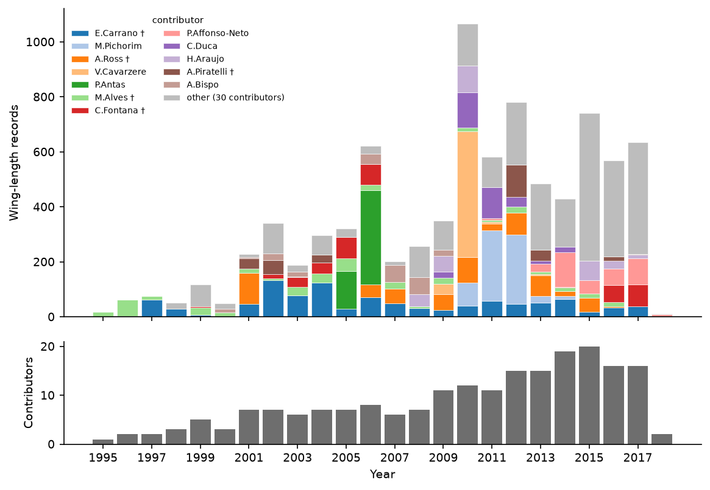
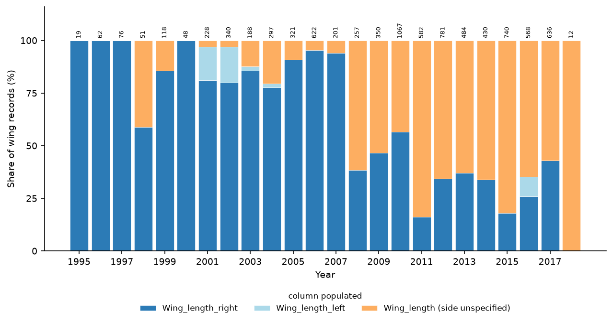
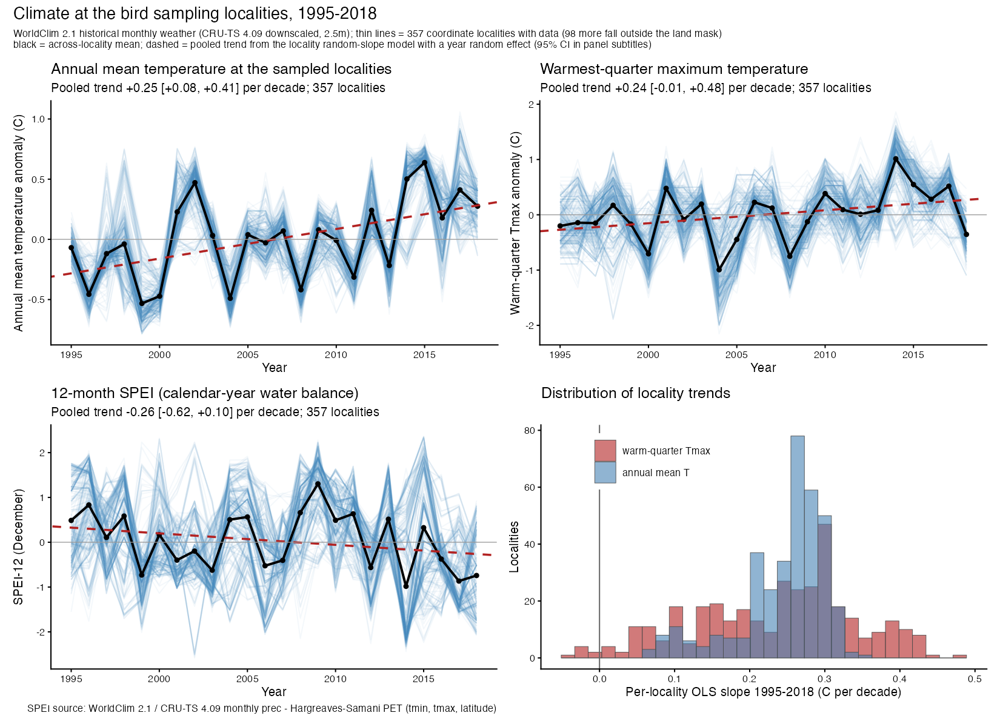
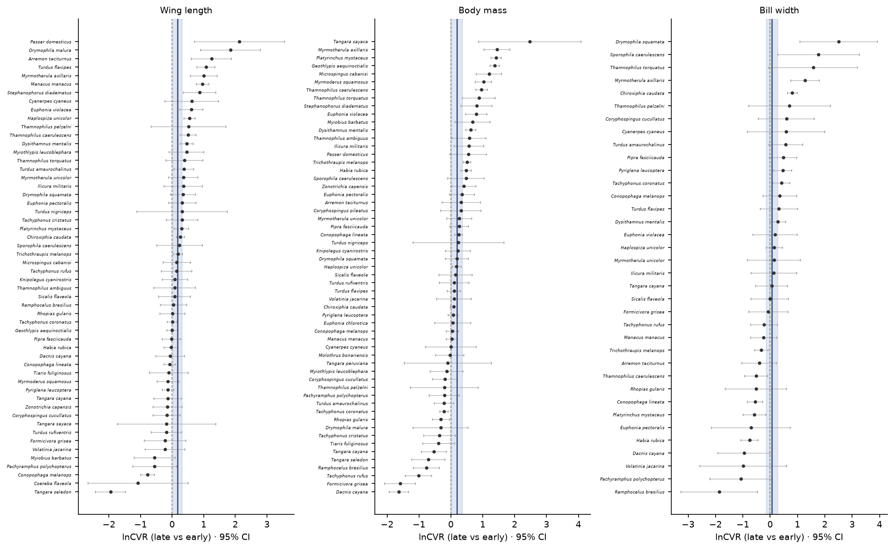

| Model specification | β (mm/SD-yr) | 95% CI | Rate (mm/dec) | N |
|---|---|---|---|---|
| M0: Baseline (sex + latitude + phylogeny) | −0.92 | [−1.40, −0.44] | −1.8 | 8,478 |
| M1a: + Contributor intercept only | −0.68 | [−1.08, −0.28] | −1.4 | 8,478 |
| M1: + Contributor and municipality intercepts | −0.53 | [−0.92, −0.13] | −1.1 | 8,478 |
| M2: M1 + Wing-column proxy + Longitude + Altitude | −0.50 | [−0.90, −0.10] | −1.0 | 8,478 |
| M3: Full controls (M2 + Season + Moult + Individual) | −0.37 | [−0.78, 0.04] | −0.7 | 8,478 |
| M3_cc: Full controls on complete cases (N = 8,282) | −0.29 | [−0.65, 0.08] | −0.6 | 8,282 |
| M3_noanom: Full controls without the anomalous sampling blocks | −0.43 | [−0.82, −0.05] | −0.9 | 8,285 |
| M5src: Within-contributor temporal slope (Mundlak REWB) | −0.16 | [−0.80, 0.48] | −0.3 | 8,478 |
| M5: Within-municipality temporal slope (Mundlak REWB) | −0.74 | [−1.68, 0.21] | −1.5 | 8,478 |
| M4: Separate trend per contributor (mean slope) | −0.88 | [−1.76, 0.01] | −1.7 | 8,478 |
| M3_longrun: Six long-running contributors only | 0.09 | [−0.53, 0.72] | 0.2 | 3,017 |
| M6: Unknown-sex replication (full M3 controls) | −0.69 | [−1.21, −0.17] | −1.4 | 3,532 |
| M7: First captures only (no recaptures) | −0.38 | [−0.78, 0.02] | −0.8 | 7,791 |
Supplementary Material: Morphological stability and subtle phenotypic shifts in Atlantic Forest birds across two decades of climate warming
1 Supplementary Notes
1.1 Supplementary Note S1: Macroecological Provenance and Contributor Turnover
Large-scale biodiversity trait compilations aggregate measurements across numerous independent research initiatives spanning wide geographical territories and multiple decades (Rodrigues et al. 2019). In our analytical sample from the ATLANTIC BIRD TRAITS database, 47 contributors (research groups, identified by their principal investigator) carried out field mist-netting in 153 municipalities between 1995 and 2018 (42 contributors and 130 municipalities in the wing sample; Fig. S1).
A provenance audit revealed substantial compositional turnover among active research teams over time: only 6 of the 42 contributors in the wing sample sampled birds in both the early period (1995–2006; 12 active contributors) and the late period (2013–2018; 33 active contributors; Fig. S1). Furthermore, spatial sampling expanded northward and into higher-elevation montane habitats during the latter half of the time series. In avian morphometrics, differences between observers can be of the same order as the temporal changes of interest (Yezerinac et al. 1992), and the column that supplied the analysed wing length also changed over time (Fig. S2). When contributor identity is left uncontrolled, compositional turnover can mimic temporal phenotypic change: the unadjusted wing-length decline attenuates by approximately 60% once contributor, municipality and the other covariates are modelled (Table S1), and the apparent trends in bill width and trait variance do not persist.
To resolve genuine biological change from sampling turnover, all models beyond the baseline incorporate random intercepts for contributor and municipality ((1 | Main_researcher), (1 | Municipality)). Within-between random effects models [Mundlak REWB; Mundlak (1978); Bell et al. (2019)] do not detect directional change within contributors, but estimate it imprecisely (within-contributor wing slope: −0.3 mm/decade, 95% CI: −1.6 to 1.0; complete cases: 0.1 mm/decade, 95% CI: −1.2 to 1.3; REML).


1.2 Supplementary Note S2: Regional Environmental and Climatic Trends (1995–2018)
We extracted monthly climate data from the WorldClim 2.1 historical monthly weather series [CRU-TS 4.09 downscaled to 2.5 arc-min; Harris et al. (2020); Fick and Hijmans (2017)] at the capture localities. Of the 455 coordinate localities, 357 had raster values; the other 98 fall outside the land mask. SPEI-12 is the standardised 12-month climatic water balance, precipitation minus potential evapotranspiration (Vicente-Serrano et al. 2010); we calculated potential evapotranspiration with the Hargreaves–Samani method, took the December value of each year, and used 1990–2018 as the reference period. Trends were estimated from the locality-by-year values with linear mixed models on year, with random intercepts and slopes for locality and a random intercept for year.
Across sampling localities, mean annual temperature increased by +0.246°C/decade (95% CI: +0.076 to +0.415°C/decade), an average warming of +0.56°C between 1995 and 2018 (Fig. S3, top left). Warmest-quarter maximum temperature rose at a similar rate but less certainly (+0.24°C/decade, 95% CI: −0.01 to +0.48; top right). Total annual precipitation (−44.7 mm/decade, 95% CI: −123.1 to +33.7) and SPEI-12 (−0.256 units/decade, 95% CI: −0.617 to +0.105; bottom left) showed no clear directional trend. Regional environmental change across our capture sites was therefore characterised mainly by warming, without a clear multi-decadal change in moisture availability.

1.3 Supplementary Note S3: Species-Level Phenotypic Variability (lnCVR)
The main text reports among-individual phenotypic variability from continuous heteroscedastic dispersion models. As a complementary species-level summary, we computed log coefficient-of-variation ratios (\(\ln\text{CVR}\)) with small-sample bias correction (Nakagawa et al. 2015) for every species with a standard deviation in both the early (1995–2006) and late (2013–2018) periods (at least two records per period), pooling effect sizes in random-effects meta-analytic models using metafor (Viechtbauer 2010). Pooled across contributors, variability appeared to increase for wing length and body mass (wing length \(\ln\text{CVR} = +0.177\), 95% CI: 0.031 to 0.323, \(k = 54\); body mass \(+0.193\), 95% CI: 0.021 to 0.366, \(k = 57\); bill width \(+0.068\), 95% CI: −0.146 to +0.282, \(k = 36\)). For wing length, restricted to species × sex cells measured by the same contributor in both periods (at least five records per period; \(k = 15\) cells), the apparent expansion was no longer evident (\(\ln\text{CVR} = −0.25\), 95% CI: −0.51 to 0.02). This subset is small and compositionally narrow: 7 of the 15 cells come from one contributor, and the estimate depends on the threshold (−0.11 with at least two records per period, \(k = 58\); −0.42 with at least ten, \(k = 4\)).

1.4 Supplementary Note S4: Temperature-Anomaly Models Across Specifications
The main text reports no clear association between morphology and the local annual temperature anomaly (\(\Delta T_{\text{local}}\)) under the full M3 adjustment set. Because an anomaly measured over a warming study period is itself correlated with calendar year, and because all birds captured at one locality in one year share an anomaly value, we fitted five specifications (Table S3). All are produced by Analysis/scripts/referee_reruns.R and stored in Analysis/output/referee_reruns/referee_reruns.rds.
In the parsimonious models containing both terms (E1a), calendar year rather than the anomaly carries the signal for wing length and the isometry contrast; at full M3 adjustment (E3b), neither term is clearly associated with any trait. In the parsimonious fits the detrended anomaly (E1b) is associated with the isometry contrast (\(p = 0.041\)), in line with the consistently positive but uncertain sign reported in the main text. The locality-year intercept, included only in E2a, widens the anomaly standard errors by about 1.3 to 1.5 times relative to E1a, so the other rows may be somewhat over-precise. We did not use a cluster-robust variance estimator: the random-effects structure is non-nested, which available implementations (clubSandwich CR2) do not support, so locality-year clustering is handled with a random intercept instead.
A further caveat is one of exposure window rather than statistics. Wing length is fixed at moult, so the mean temperature of the calendar year in which a bird happened to be captured is not a plausible causal exposure for its wing length. Any thermal mechanism would have to operate during feather growth, which these data cannot resolve.
2 Supplementary Tables
| Model specification | β (per SD-yr) | 95% CI | Rate (%/dec) | N |
|---|---|---|---|---|
| Body mass M0 Baseline (sex + latitude + phylogeny) | −0.0072 | [−0.0165, 0.0021] | −1.4% | 11,256 |
| Body mass M1 (+ Contributor and municipality intercepts) | −0.0056 | [−0.0164, 0.0051] | −1.1% | 11,256 |
| Body mass M3 Full controls (M1 + Longitude + Altitude + Season + Individual) | −0.0046 | [−0.0138, 0.0047] | −0.9% | 11,077 |
| Body mass Mundlak within-contributor slope | −0.0032 | [−0.0104, 0.0041] | −0.6% | 11,077 |
| Specification | Response | Term | Estimate | 95% CI | p | N | Trees |
|---|---|---|---|---|---|---|---|
| E1a: anomaly + year | Wing length (mm) | ΔT (local annual anomaly, °C) | -0.02200 | [-0.405, 0.361] | 0.9100 | 7,224 | 1 |
| E1a: anomaly + year | Wing length (mm) | Year (per SD) | -0.53800 | [-0.967, -0.109] | 0.0140 | 7,224 | 1 |
| E1b: detrended anomaly | Wing length (mm) | ΔT detrended (°C) | -0.16300 | [-0.546, 0.22] | 0.4000 | 7,224 | 1 |
| E1a: anomaly + year | log body mass | ΔT (local annual anomaly, °C) | 0.00727 | [-0.0062, 0.0207] | 0.2900 | 7,224 | 1 |
| E1a: anomaly + year | log body mass | Year (per SD) | -0.00189 | [-0.0121, 0.00832] | 0.7200 | 7,224 | 1 |
| E1b: detrended anomaly | log body mass | ΔT detrended (°C) | 0.00640 | [-0.00695, 0.0198] | 0.3500 | 7,224 | 1 |
| E1a: anomaly + year | Isometry contrast (ln M − 3 ln L) | ΔT (local annual anomaly, °C) | 0.01570 | [-0.00379, 0.0352] | 0.1100 | 7,224 | 1 |
| E1a: anomaly + year | Isometry contrast (ln M − 3 ln L) | Year (per SD) | 0.01990 | [0.00579, 0.0341] | 0.0057 | 7,224 | 1 |
| E1b: detrended anomaly | Isometry contrast (ln M − 3 ln L) | ΔT detrended (°C) | 0.02010 | [0.000833, 0.0394] | 0.0410 | 7,224 | 1 |
| E2a: + locality-year intercept | Wing length (mm) | ΔT (local annual anomaly, °C) | -0.32900 | [-0.902, 0.243] | 0.2600 | 7,224 | 1 |
| E2a: + locality-year intercept | log body mass | ΔT (local annual anomaly, °C) | 0.00574 | [-0.012, 0.0235] | 0.5300 | 7,224 | 1 |
| E2a: + locality-year intercept | Isometry contrast (ln M − 3 ln L) | ΔT (local annual anomaly, °C) | 0.02570 | [-0.00277, 0.0542] | 0.0770 | 7,224 | 1 |
| E3: M3 adjustment | Wing length (mm) | ΔT (local annual anomaly, °C) | 0.01040 | [-0.369, 0.39] | 0.9600 | 7,070 | 50 |
| E3b: M3 adjustment + year | Wing length (mm) | ΔT (local annual anomaly, °C) | 0.11200 | [-0.272, 0.496] | 0.5700 | 7,070 | 50 |
| E3b: M3 adjustment + year | Wing length (mm) | Year (per SD) | -0.29400 | [-0.701, 0.113] | 0.1600 | 7,070 | 50 |
| E3: M3 adjustment | log body mass | ΔT (local annual anomaly, °C) | 0.00485 | [-0.00847, 0.0182] | 0.4800 | 7,070 | 38 |
| E3b: M3 adjustment + year | log body mass | ΔT (local annual anomaly, °C) | 0.00596 | [-0.00749, 0.0194] | 0.3900 | 7,070 | 50 |
| E3b: M3 adjustment + year | log body mass | Year (per SD) | -0.00179 | [-0.0104, 0.00686] | 0.6900 | 7,070 | 50 |
| E3: M3 adjustment | Isometry contrast (ln M − 3 ln L) | ΔT (local annual anomaly, °C) | 0.01170 | [-0.00777, 0.0312] | 0.2400 | 7,070 | 48 |
| E3b: M3 adjustment + year | Isometry contrast (ln M − 3 ln L) | ΔT (local annual anomaly, °C) | 0.00945 | [-0.0102, 0.0292] | 0.3500 | 7,070 | 50 |
| E3b: M3 adjustment + year | Isometry contrast (ln M − 3 ln L) | Year (per SD) | 0.01120 | [-0.00248, 0.0248] | 0.1100 | 7,070 | 50 |
References
Bell, Andrew, Malcolm Fairbrother, and Kelvyn Jones. 2019. “Fixed and Random Effects Models: Making an Informed Choice.” Quality & Quantity 53 (2): 1051–74. https://doi.org/10.1007/s11135-018-0802-x.
Fick, Stephen E., and Robert J. Hijmans. 2017. “WorldClim 2: New 1-Km Spatial Resolution Climate Surfaces for Global Land Areas.” International Journal of Climatology 37 (12): 4302–15. https://doi.org/10.1002/joc.5086.
Harris, Ian, Timothy J. Osborn, Phil Jones, and David Lister. 2020. “Version 4 of the CRU TS Monthly High-Resolution Gridded Multivariate Climate Dataset.” Scientific Data 7 (1): 109. https://doi.org/10.1038/s41597-020-0453-3.
Mundlak, Yair. 1978. “On the Pooling of Time Series and Cross Section Data.” Econometrica 46 (1): 69–85. https://doi.org/10.2307/1913646.
Nakagawa, Shinichi, Robert Poulin, Kerrie Mengersen, et al. 2015. “Meta-Analysis of Variation: Ecological and Evolutionary Applications and Beyond.” Methods in Ecology and Evolution 6 (2): 143–52. https://doi.org/10.1111/2041-210X.12309.
Rodrigues, Rodolpho Credo, Érica Hasui, Julia Camara Assis, et al. 2019. “ATLANTIC BIRD TRAITS: A Data Set of Bird Morphological Traits from the Atlantic Forests of South America.” Ecology 100 (6): e02647. https://doi.org/10.1002/ecy.2647.
Vicente-Serrano, Sergio M., Santiago Beguerı́a, and Juan I. López-Moreno. 2010. “A Multiscalar Drought Index Sensitive to Global Warming: The Standardized Precipitation Evapotranspiration Index.” Journal of Climate 23 (7): 1696–718. https://doi.org/10.1175/2009JCLI2909.1.
Viechtbauer, Wolfgang. 2010. “Conducting Meta-Analyses in R with the metafor Package.” Journal of Statistical Software 36 (3): 1–48. https://doi.org/10.18637/jss.v036.i03.
Yezerinac, Stephen M., Stephen C. Lougheed, and Paul Handford. 1992. “Measurement Error and Morphometric Studies: Statistical Power and Observer Experience.” Systematic Biology 41 (4): 471–82. https://doi.org/10.1093/sysbio/41.4.471.